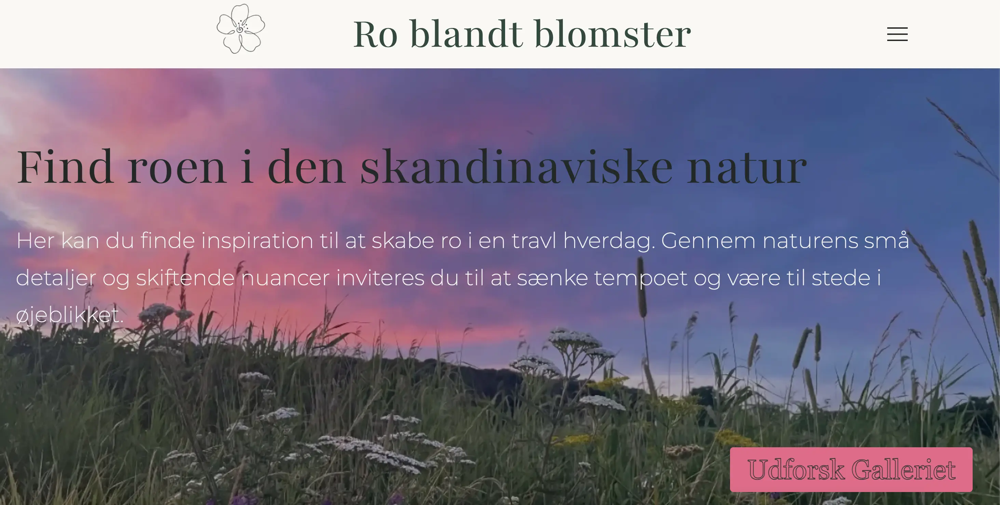
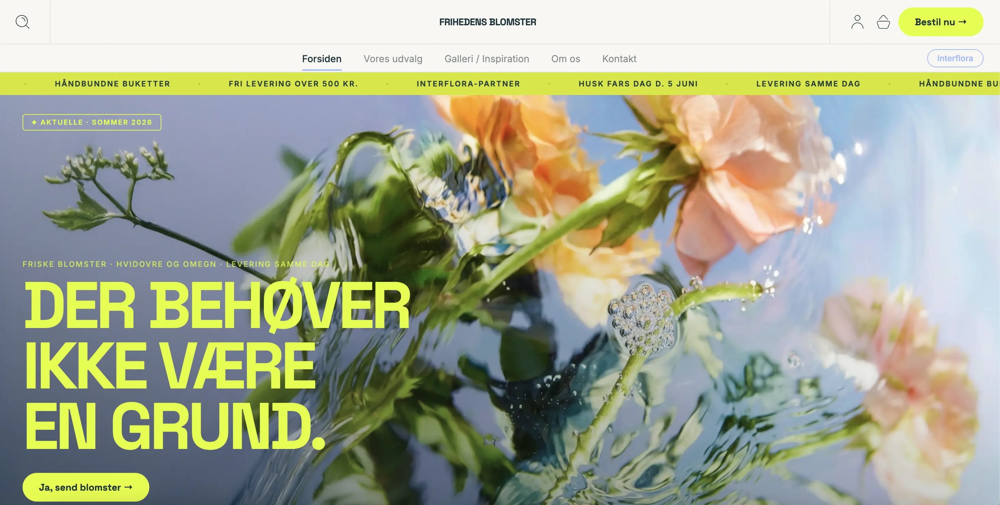

Grundlaeggende indhold
Tema 5 havde fokus på indholdsproduktion og redesign af en virksomheds hjemmeside. Formålet var at give en grundlæggende forståelse for hele processen bag produktion af digitalt indhold.
I dette projekt skulle vi kombinere mange af de kompetencer, vi havde opnået gennem semesteret, og anvende dem i en samlet løsning. Derudover blev vi introduceret til nye værktøjer som Adobe Photoshop og Adobe After Effects, som gav os mulighed for at arbejde med billedredigering og animation.
Projektet blev udført som gruppearbejde, hvor vi arbejdede fire personer sammen om at udvikle den endelige løsning.
Min løsning
Sandkassesite
Inden vi begyndte arbejdet med virksomhedssitet, fik vi en individuel opgave, som havde til formål at genopfriske de kompetencer, vi havde opnået gennem de tidligere temaer på semesteret. Opgaven gav mig mulighed for at arbejde med både design, kodning og udviklingsprocesser, inden vi gik i gang med det større gruppeprojekt. På den måde fungerede opgaven som en forberedelse til virksomhedssitet og hjalp mig med at styrke de færdigheder, jeg senere skulle anvende i projektet.

Virksomhedsite
I dette projekt arbejdede vi med blomsterbutikken Frihedens Blomster. Som en del af processen kontaktede vi virksomheden for at få indsigt i deres ønsker og behov i forbindelse med et redesign af hjemmesiden. De fortalte, at de gerne ville gøre hjemmesiden mere attraktiv og målrettet en yngre målgruppe, hvilket blev udgangspunktet for vores designvalg.
For at imødekomme dette ønskede vi at skabe et mere inspirerende og moderne visuelt udtryk. Derfor valgte vi at fokusere på blomsterne i brug frem for blot produktbilleder. Vi producerede blandt andet billeder, hvor blomsterne indgik i forskellige situationer og omgivelser, for at inspirere brugerne og vise de mange muligheder, blomster kan bruges til.

Min læring
Arbejdsprocessen i dette tema var anderledes end i de tidligere projekter, da det foregik som gruppearbejde. Jeg oplevede, at arbejdsopgaverne og den kreative retning blev fastlagt tidligt i processen, hvilket betød, at jeg ikke i samme grad som tidligere projekter var involveret i alle dele af idéudviklingen.
Det gav mig en indsigt i nogle af de udfordringer, der kan opstå i gruppearbejde, når kommunikation og rollefordeling ikke er helt tydelig. Derfor valgte jeg at fokusere på de opgaver og læringsmuligheder, jeg havde ansvar for, og på at udvikle mine egne kompetencer inden for kodning og frontend-udvikling.
Selvom processen var anderledes end forventet, lærte jeg, hvor vigtigt det er med løbende kommunikation, klare ansvarsområder og fælles beslutninger i et projekt. Det er en erfaring, jeg vil tage med mig i fremtidige samarbejder.